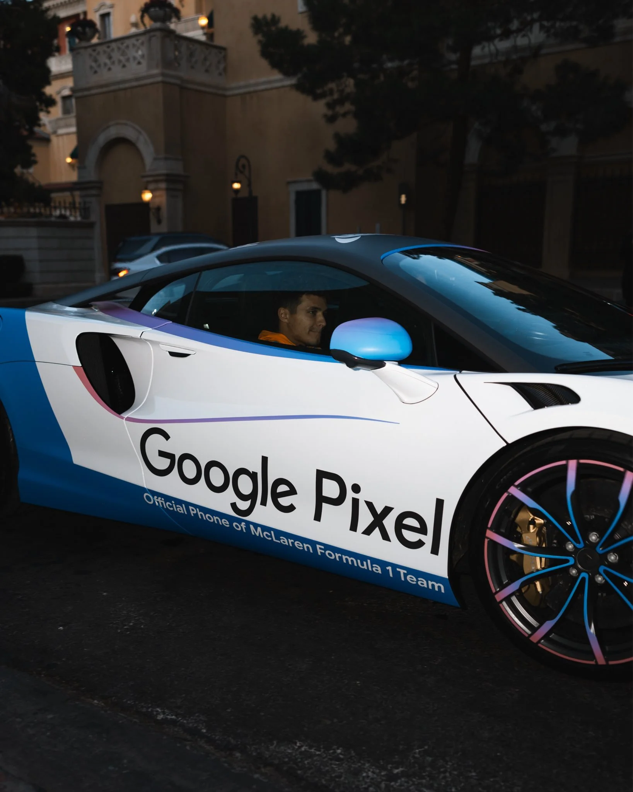
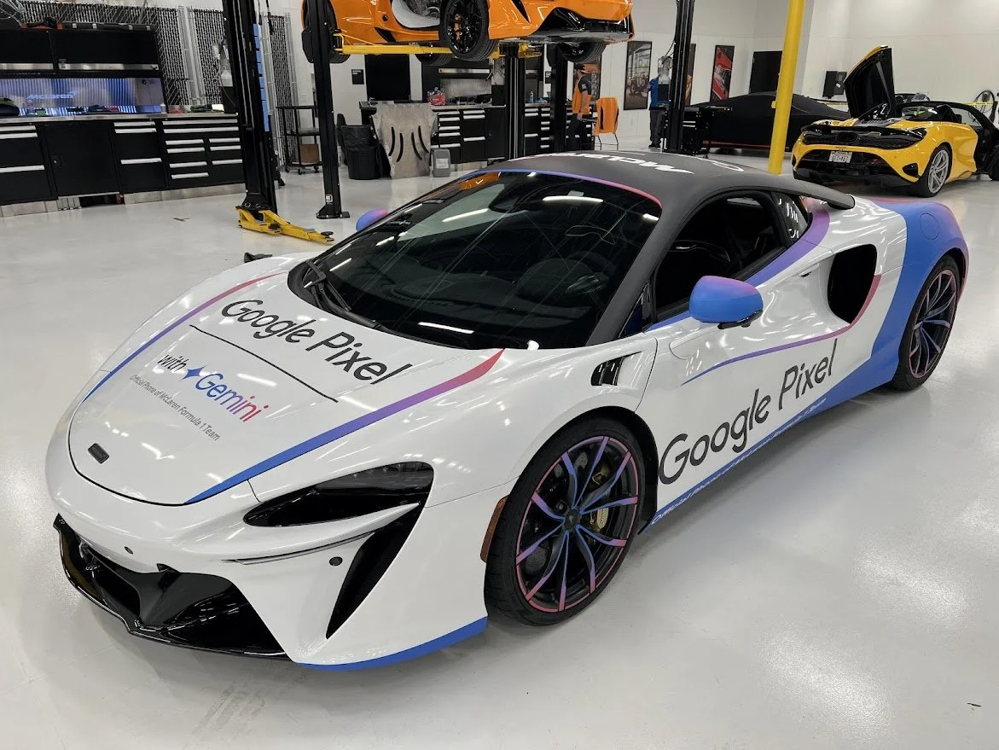
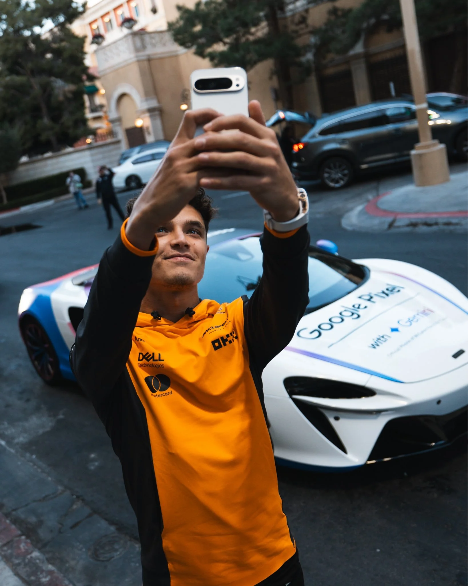
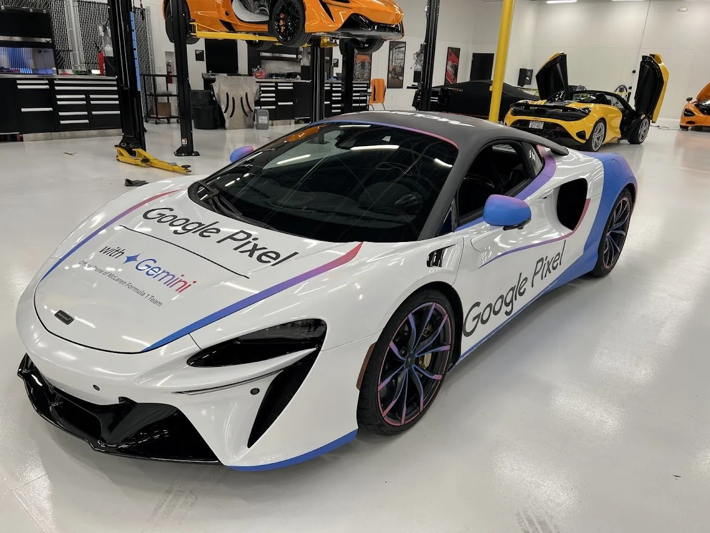
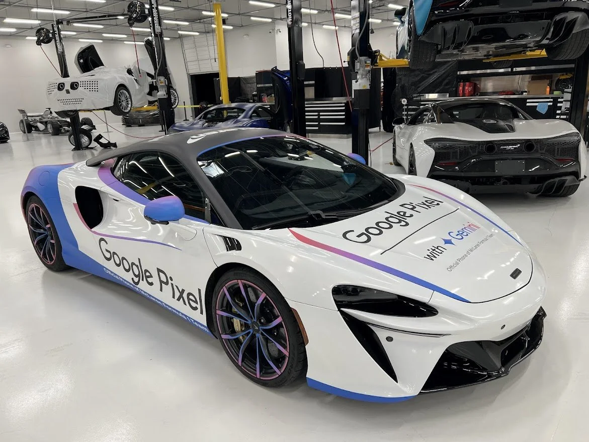
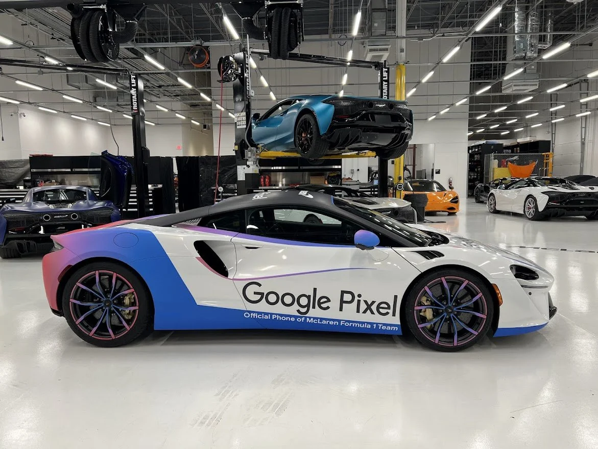
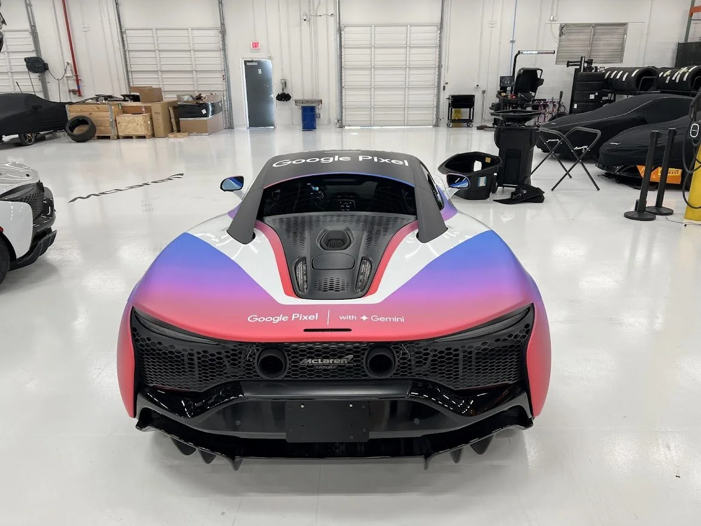
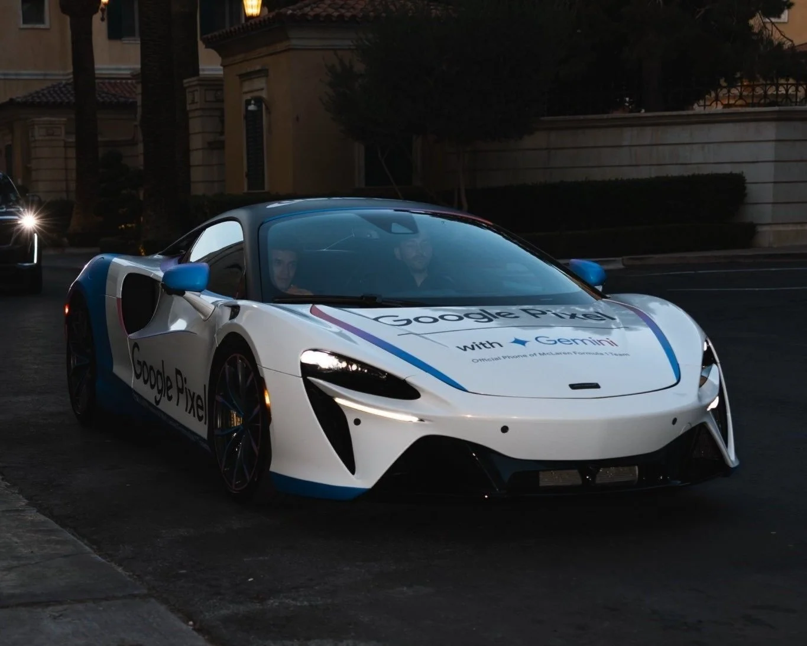
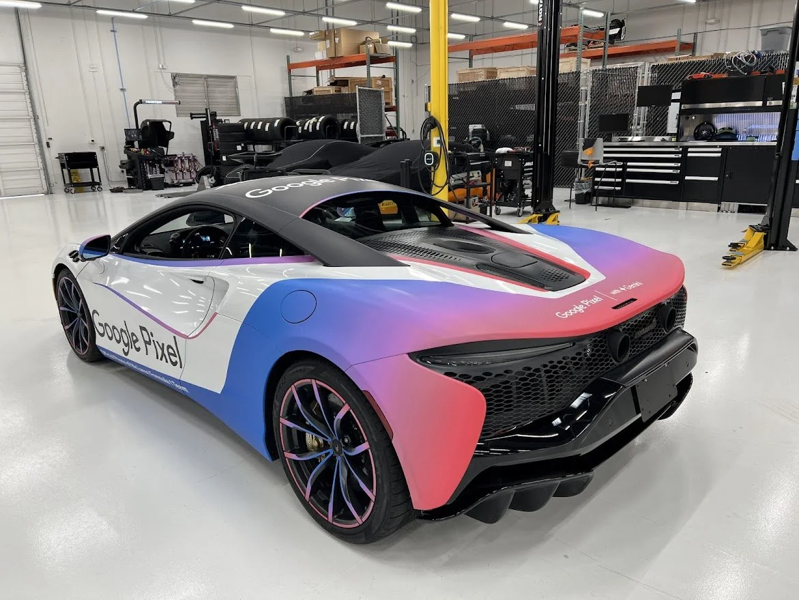
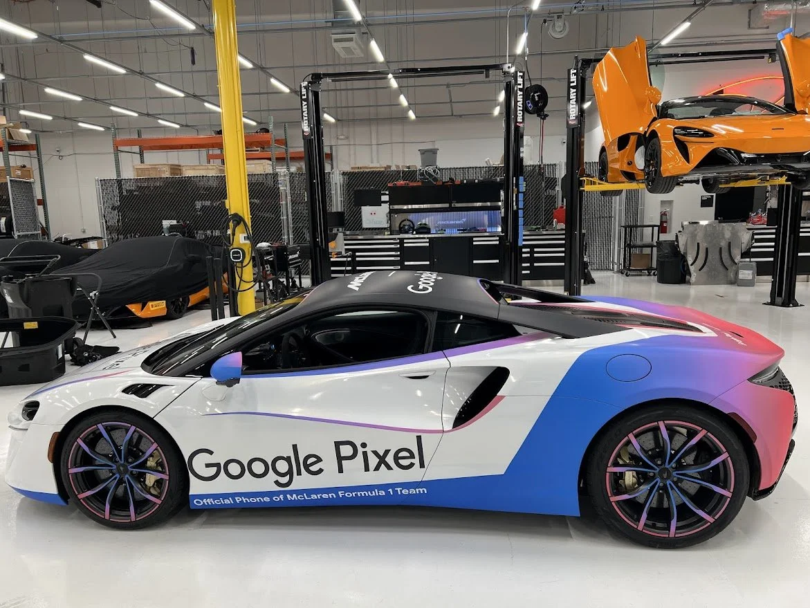

24 hours, zero brief, Lando Norris, and a McLaren race car.
One day to turn "put Pixel on the car" into a graphics package the car actually wears on track.
Pitched it, designed it, sent it to McLaren overnight. The car raced the next day wearing it.







No briefing. No asset library. No second draft.



Evidently, "yesterday" is a real deadline in race car graphics. Who knew.